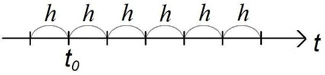
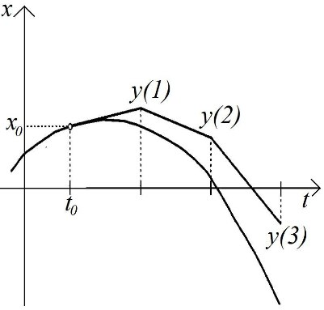
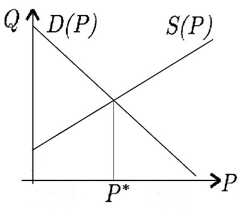
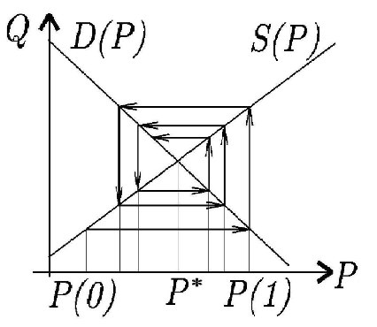
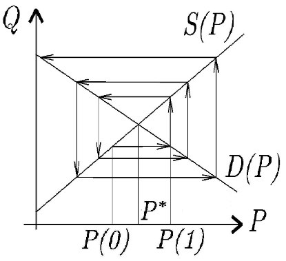
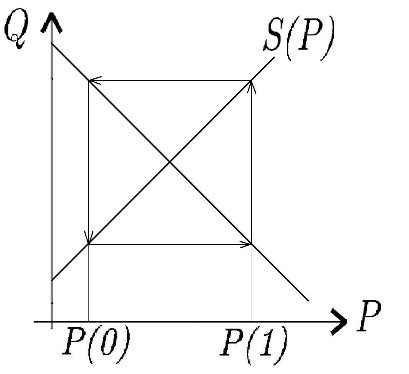

Арифметическая прогрессия задается разностным уравнением первого порядка. Действительно, пусть \(x(t)\) - элемент арифметической прогрессии с номером \(t\), a \(d\) - разность прогрессии. Тогда \[x(t + 1 ) = x(t) + d.\]
Геометрическая прогрессия со знаменателем \(q\) определяется уравнением \(x(t + 1 ) = qx(t).\)
Дана последовательность частичных сумм числового ряда \[a_1 + a_2 + \cdots + a_n + \cdots.\] Обозначим частичную сумму ряда \[x(t) = \sum_{i=1}^{t}a_i.\] Тогда \[x(t + 1 ) = x(t) + a_{i+1}.\] В частности, сумма \[x(t) = l^2 + 2^2 + 3^2 + \cdots + t^2\] является решением разностного уравнения \[x(t + 1 ) = x(t) + (t + l )^2\] с начальным условием \(х(1 ) = 1^2 = 1\).
Рост процентного вклада задается разностным уравнением первого порядка. Пусть \(x(t)\) — величина вклада после \(t\) месяцев; \(p\) — месячная процентная ставка, \(0 < p < 1\). Тогда \[x(t + 1 ) = (1 +p)x(t)\].
Рост процентного вклада с регулярными взносами определяется по формуле \[x(t + 1 ) = (1 + p) x(t) + R,\] где \(R\) - величина ежемесячного взноса.
Величина долга по займу с регулярными выплатами определяется по формуле \[x(t + 1 ) = (1 + p) x(t) - R ,\] где \(R\) - размер выплат.
Последовательность Фибоначчи \[1, 1, 2, 3, 5, 8 , \cdots ,\] в которой каждое последующее число равно сумме двух предыдущих чисел, удовлетворяет разностному уравнению второго порядка \[x(t + 2 ) = x(t + 1 ) + x(t)\] и начальным условиям \(x(1 ) = 1 , x(2 ) = 1\).
Разностные уравнения также возникают в процессе приближенного решения обыкновенного дифференциального уравнения \[\dot{x} = f(t,x),\] аналитическое решение которого в общем случае неизвестно.
По определению производной \[\dot(x)(t) = \lim_{h \rightarrow 0}\frac{x(t+h) - x(t)}{h}.\] Следовательно, приближенно при малых \(h\) можно заменить производную отношением разности значений функции к разности значений аргумента: \[\dot{x}(t) \approx \frac{x(t+h) - x(t)}{h}.\]
Поэтому исходное дифференциальное уравнение можно приблизить уравнением \[x(t + h) = x(t) + h f ( t , x(t)).\]
Практическое применение уравнения \(x(t+h) = x(t) + hf(t, x(t))\): на оси времени выделяется последовательность точек, называемая \(\textbf{сеткой}\)

\(h>0\) - фиксированный \(\textbf {шаг сетки},\)
\(t_0\) - заданный начальный момент времени,
рассматривают лишь дискретные значения времени - \(\textbf {узлы сетки}\) \[t_k = t_0 + k*h,\;где\;k \in N\]
Пусть \(y(k) (k \in N)\) - искомая функция, определенная на множестве узлов сетки. Рассмотрим относительно функции \(y\) уравнение \[y(k+1) = y(k) + hf(t_0 + kh, y(k)).\]
Это пример разностного уравнения \(\textbf{первого порядка}\)
Приближенный метод решения ОДУ при помощи разностного уравнения \(y(k+1) = y(k) + hf(t_0 + kh, y(k))\) называется \(\textbf {методом Эйлера.}\)
Если задано начальное значение \(x(t_0) = y(0)\), то из уравнения \(y(k+1) = y(k) + hf(t_0 + kh, y(k))\) последовательно определим значения \[y(1), y(2), y(3), y(4), ...\] приближенно равные значениям \[x(t_0 + h), x(t_0 + 2h), x(t_0 + 3h), x(t_0 + 4h), ...\] решения задачи Коши для ДУ \(\dot{x} = f(t,x)\) в узлах сетки.
\(\textbf{Геометрическая интерпретация}\)

Паутинообразная модель рынка.
Модель рыночного регулирования цены на рынке одного товара.
Обозначения"
\(P(t)\) - цена товара, \(D(t)\) - величина спроса на товар, \(S(t)\) - величина предложения товара в период \(t\).
Предположения:
1) функция спроса линейно зависит от текущей цены товара \[D(t) = \alpha + AP(t),\] где \(A < 0,\;\alpha\) - постоянные параметры;
2) функция предложения линейно зависит от цены на товар за предыдущий период \[S(t) = \beta + BP(t-1),\] где \(B>0, \beta\) - постоянные параметры(предложение сегодня складывается на основе вчерашних цен);
3) цена каждого периода устанавливается так, чтобы уравнять спрос и предложение \[D(t) = S(t);\]
4) известна начальная цена \(P(0)\)
Отсюда \[\alpha + AP(t) = \beta + BP(t-1)\] или \[P(t) = \frac{B}{A}P(t-1) + \frac{\beta - \alpha}{A}.\]
Это линейное неоднородное разностное уравнение 1-го порядка с постоянными коэффициентами.
Графическая интерпретация процесса рыночного регулирования цены.
В системе координат \((P,Q)\) прямые \(D = \alpha + AP\) и \(S = \beta + BP\)
Точка пересечения прямых соответствует положению равновесия на рынке - равновесной цене \(P^*\)


Если \(\left | \frac{B}{A} \right | < 1,\) то паутина сходится к точке равновесия, т.е. \(\lim_{t \to \infty} P(t) = P^*\)

В случае \(\left | \frac{B}{A} \right | > 1,\) то паутина расходится.
Колебания цены увеличиваются с каждым новым периодом.

В случае \(\left | \frac{B}{A} \right | = 1\) цена меняется циклически (повторяется через каждые два периода).
Модель делового цикла(Самуэльсона-Хикса) описывает волнообразный характер развития экономики - чередование подъемов и спадов конъюнктуры.
Предположения:
1) Величина потребления в любой период времени является линейной функцией национального дохода за предыдущий период \[C(t) = aY(t-1) + b,\] где \(0<\)\(a<\)1,\(\;b>0\)
(число a - коэффициент склонности к потреблению).
2) Текущий объем инвестиций пропорционален с некоторым коэффициентом приращению национального дохода за предыдущий период \[I(t) = \lambda(Y(t-1) - Y(t-2)),\] \(\lambda\) - коэффициент акселерации. Допускается \(I(t) < 0.\)
3) Выполняется закон сохранения: \[Y(t) = C(t) + I(t).\] В результате получается \[Y(t) = aY(t-1) + b + \lambda(Y(t-1) - Y(t-2))\] или \[Y(t) = (a + \lambda)Y(t-1) - \lambda Y(t-2) + b\] Замена нумерации моментов времени \(\tau = t + 2\). \[Y(\tau+2) = (a+\lambda)Y(\tau+1) - \lambda Y(\tau) + b.\] линейное неоднородное разностное уравнение 2-го порядка с постоянными коэффициентами.
Многие процессы в экономике изменяют свое состояние не непрерывно, а дискретно:
\(\bullet\) официальный курс доллара устанавливается один раз в день;
\(\bullet\) стоимость многих ценных бумаг, величина банковский вкладов рассчитывается с точностью до одного дня;
\(\bullet\)зарплата, проценты по вкладам выплачиваются один раз в месяц;
\(\bullet\)статистические данные о состоянии предприятия, отрасли, государства подготавливаются ежемесячно, ежеквартально, ежегодно.
Такие данные невозможно получать непрерывно.